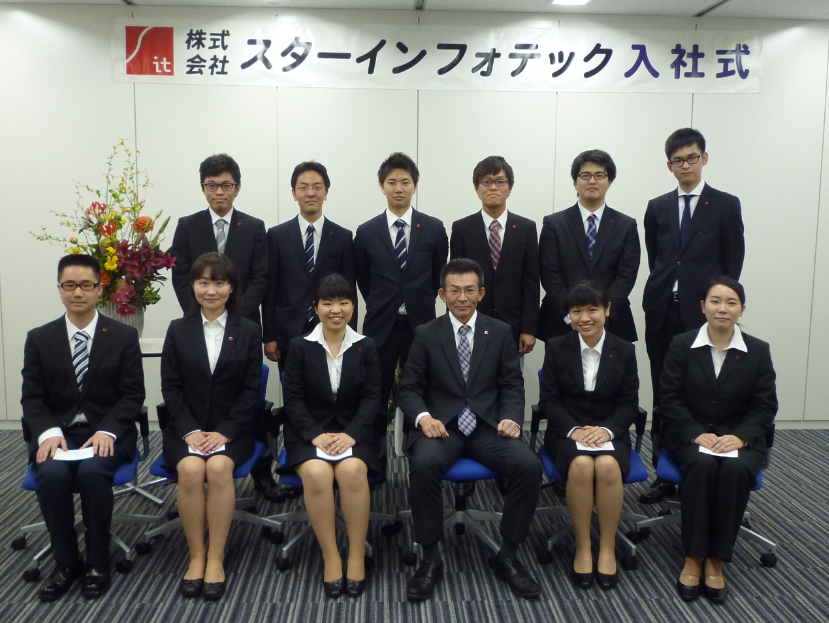

入社の決め手は？
- 大同特殊鋼という大きな会社のシステムを支えることができる会社であったことと、面接をしていくうちにこの会社の雰囲気が好きだと感じたからです。
- 大同特殊鋼の情報子会社であるため、大きいプロジェクトに携われるのではないか、と思ったことが一番の決め手です。
- 文系出身ですが大学の友人の影響でもともとＩＴ系の会社に興味があり、またＩＴ系の中でも特にユーザーと近い距離で仕事ができることが入社の決め手となりました。
- 大同特殊鋼の大きな業務をシステムという立場から支えることができ、学びながら働くことで、自身のスキルを身につけることができると感じたためです。また、会社説明会や面接等で感じた社員の方々の人柄の良さも決め手の一つです。
- 地元である愛知に拠点があり、大同特殊鋼のシステムを支える大きな仕事に魅力を感じました。選考を進める中で、社員の方々の雰囲気にも惹かれ、入社を決めました。
- 文系でも理系の仕事ができるだけの教育制度があると聞いたことです。大同特殊鋼のグループ会社なので安定していること、自分の仕事の成果が間近で見られることと合わせて魅力的に感じました。
- スケールの大きな開発に携わることができると感じたためです。
- 大規模システムの運用、構築、保守に携われる点や、親会社である大同特殊鋼と同等の福利厚生を受けられることが魅力的だったからです。
- 大同特殊鋼の大規模なシステムに間近で携われることに、大きな魅力を感じました。また、先輩社員の方々の人柄も良く、長く働いていけると思い入社を決めました。
- システム開発に興味があったこと、顧客との距離が近く、自分の作成したシステムのフィードバックを利用者から得られやすいことが決め手となりました。
- 文系大学出身の先輩社員が活躍しており、プログラミング経験を問わず将来的にシステムエンジニアとして活躍できると思ったことが決め手です。
入社後の印象は？
- 現場である工場に行く機会が多く、ユーザ側となる現場の人たちと接する機会が多いと感じました。
- 職場の雰囲気が明るく周りの先輩方が優しいので、わからないことがあっても聞きやすいです。
- オンオフがしっかりしている方が多いと感じます。入社前の印象と変わりはなく、とてもいい雰囲気だと思います。
- 入社前の印象通り優しい方ばかりの職場で、質問もしやすく働きやすい職場です。
- 入社前と大きなギャップはありませんでした。学生時代プログラミング未経験ということもあり、不安も多くありましたが、研修や配属後のサポートが充実しているので、無理なく業務を進めることが出来ています。
- 業務を十分にこなすには多くの知識が必要であり、頼られていると感じる機会が多くあると感じます。
- 保有しているノウハウの多さや、先輩社員の技術力の高さに驚かされました。
- プログラミングの知識以上に業務用語を覚える事が多く、一般的なＩＴ会社とは異なると感じた。
- 先輩社員の方々とのコミュニケーションが取りやすいと感じました。
- 研修内容と期間、ブラザー制度など、新入社員へのフォローが手厚く感じました。
- 仕事に対し、熱意と責任感を持って取り組んでいる社員が多いと感じました。
新入社員研修の感想
- プログラマ研修では、分からないところをしっかり消化してくださったので有意義な時間でした。
- 業務で使用されている言語について学びつつ、大同特殊鋼特有の工場操業についても学ぶことが出来てとてもためになりました。
- 学生時代プログラミングの経験はありませんでしたが、講師や指導員の方がわからないところを丁寧に教えてくださり、理解を深めることができました。
- 研修が充実していると感じました。プログラマ研修ではＣＯＢＯＬを中心にプログラミングを学ぶことができ、未経験者であっても配属時までに能力的な不安を取り除くことができました。
- 大同グループ研修は、多くの人とコミュニケーションを取る機会があり、またとない貴重な経験ができました。自社研修では、プログラミングの基礎から勉強しました。未経験での入社だったため、苦戦しましたが、周りのサポートもあり、無事終えることができました。
- 配属後は会う機会が減るため、スターインフォテックの同期が全員そろう貴重な場でした。プログラミング未経験者も多くいるため、お互いに教え合うことで理解を深めることができました。
- 非常に有意義なものでした。その理由は、研修内容の量や質の良さです。大同グループ研修ではビジネスマナーを始め、QCDを意識し、業務にあたることなどを学びました。また、大同グループの方々と関わることで刺激を与え合うことができました。
- ＣＯＢＯＬの研修が実践形式で行われ、配属後も研修でやったことが無駄になりませんでした。また、一人が問題に直面した際は全体の共有が頻繁に行われ、自分の考えを述べる機会が多かったです。
- 大同グループ研修では、他のグループ会社の同期と合宿を行い横の広がりが出来たのでとても良かったと思います。研修ではプログラミングの基礎を丁寧に教えて下さり学ぶことができました。
- グループ会社合同の研修があり、スターインフォテックの同期以外との交流ができました。グループ会社についての知識も深まり、非常に有意義でした。
- 主となる講師の他に細かな質問に対応してくれるサポートメンバーが配置されていたことにより、プログラミング経験が無くても研修についていくことができました。
私の職場紹介
- 大同の生産のメインとなるシステムを支えていて、先輩方はその責任の重大さにしっかりと応えていてその姿に毎日圧倒されています。かと言ってピリピリしたムードでもなく温かい雰囲気なので毎日楽しく仕事をしてます。
- 人数が多く、様々な担当部署があるので、業務に関する知識を幅広く聞くことが出来ます。また、雰囲気もとても良いです。
- 一番人数が多い事業所の為、活気があり和気藹々としています。そのため質問もしやすく、業務に関する知識を学んでいくことができます。
- 主に工場ラインの「プロコン」と呼ばれるシステムの保守運用を行っています。他の部署に比べると担当するシステム数が多いため、覚えることも多く初めのうちは大変ですが、多くの方とか関わることができるやりがいのある部署です。また、上司や先輩は優しい方ばかりで、働きやすい職場環境だと実感しています。
- 築地センターで関連会社のシステム保守をメインに行っています。小規模な事業所ということもあり、先輩には皆優しく接していただきとても働きやすい環境です。
- 大きな工場のシステムを担当している職場なので、様々なことを学ぶ機会があります。先輩方はそれぞれ詳しく理解されているので、質問すると丁寧に教えていただけます。
- 私の所属する、プロコンチームは現場端末の保守管理が多いと感じました。また、開発するプログラムも現場の操業のため、プログラムの理解を深めるだけでなく、現場の運用やハード構成を理解することを求められる職場だと感じました。先輩社員は優しく、頼りになる方々ばかりで楽しく仕事をできています。
- 工場システムに携わるシステムを担当しています。分からない事があれば周りの先輩が必ず答えてくれる為、安心して仕事が行えます。また、現場に赴く事も頻繁にある為、現場を身近に感じることができます。
- 先輩社員は皆優しく、分からないことがあれば親身になって教えてくれます。また、定期的に勉強会を開催して頂いたり、現場に行った際には運用含めた設備の説明や危険箇所を丁寧に教えて頂けるため、非常に働きやすく多くの事を吸収できる職場環境です。
- 社内のインターネット環境やネットワーク、PCなどインフラの整備、保守を行っています。楽しく真面目な職場です。また、インフラ関係の知識を蓄えられるのも魅力です。
- 主に関連会社のシステム開発・保守を行っています。多種多様なシステムに携わることができ、とても勉強になります。
今後の抱負
- 自分の判断で仕事ができるようになるよう、業務知識やスキルを日々勉強していきたいです。先輩方のようにしっかり仕事がこなせるようにがんばります。
- 後輩を持つことで、尋ねられることもまた起こると思います。その時にしっかり答えられるように場数を踏んで、業務知識を積み重ねていこうと思います。
- システムやプログラミングに関して、保守ができるようになるため日々励んでいきます。また、ユーザーの業務についても知識を深めていき、ユーザーとの関係も密になるよう交流を深めていきます。
- 業務についてまだまだ先輩社員に頼るところが多く、教えてもらったりヒントを出してもらったりしながら業務を進めています。日々の業務から様々なことを学び、自分のスキルを身につけていきたいです。
- まずは、目の前の与えられた業務を全力でこなしていきたいです。そして、一つずつできることを増やしていき、信頼して仕事を任せてもらえるようになりたいです。
- 仕事を安心して任せてもらえるように、業務に関することを学び、復習して自分の力にしていきます。
- より多くの製造プロセスのシステムに関わり、プログラムを書けるだけでなくトラブル対応も適切に行えるようになりたいです。
- 現在自分が、先輩方に助けられながら業務を行っているので、自分が後輩に助けを求められた際は、同じように回答できるように知識と経験を養いたいです。
- 今は分からないことが沢山ありますが、積極的に知識を増やし、多くの経験を重ね、早く一人前になれるように頑張りたいと思います。
- 業務に関する知識、スキルは勿論のこと、コミュニケーション能力など社会人としてのスキルを身に付け、伸ばしていきたいです。
- 業務遂行に必要となるスキルを身に着け、安心して業務を任されるようになりたいです。日々の業務に全力で取り組み、日進月歩で成長していきたいです。